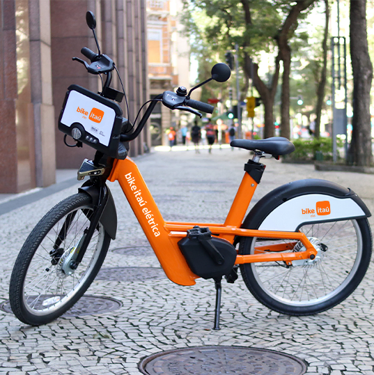
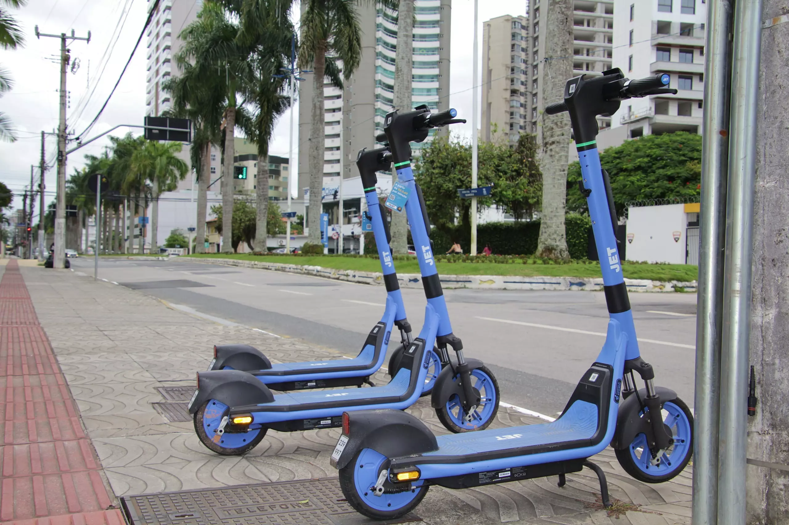
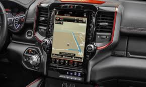

Bicicleta eletrica
As bicicletas elétricas, ou e-bikes, são uma alternativa cada vez mais popular para quem busca uma forma de transporte eficiente, econômica e sustentável. Equipadas com um motor elétrico, essas bicicletas oferecem assistência ao pedal, tornando mais fácil e acessível percorrer distâncias maiores e enfrentar terrenos mais desafiadores. Neste texto, exploraremos em detalhes como funciona uma bicicleta elétrica, desde o funcionamento do motor até os diferentes tipos de sistemas de assistência ao pedal.
R$ 399,99

Patinete eletrico
Um patinete elétrico é um meio de transporte pessoal movido por um motor elétrico, projetado para ser ágil, eficiente e sustentável. Ele possui um deck, onde o usuário fica em pé, guidão para direcionamento e um sistema de bateria recarregável que alimenta o motor. Aceleradores e freios geralmente ficam localizados no guidão para controle de velocidade e parada. Esses patinetes são populares em ambientes urbanos, sendo usados para deslocamentos curtos, e muitas vezes podem ser compartilhados por meio de serviços de aluguel. Sua principal vantagem é a praticidade, economia de tempo e redução do impacto ambiental em relação aos veículos a combustão.
R$ 399,99

Dispositivos de monitoramento
Um dispositivo de monitoramento de carro é um equipamento que permite acompanhar a localização e o comportamento de um veículo em tempo real. Ele utiliza tecnologias como GPS e redes de comunicação para transmitir dados sobre a posição do carro, velocidade, e outros parâmetros, podendo ser acessados remotamente por meio de aplicativos ou plataformas online. Esse tipo de dispositivo é frequentemente utilizado para aumentar a segurança do veículo, prevenindo furtos, ou para fins de gestão em empresas que controlam frotas de veículos.
R$ 399,99